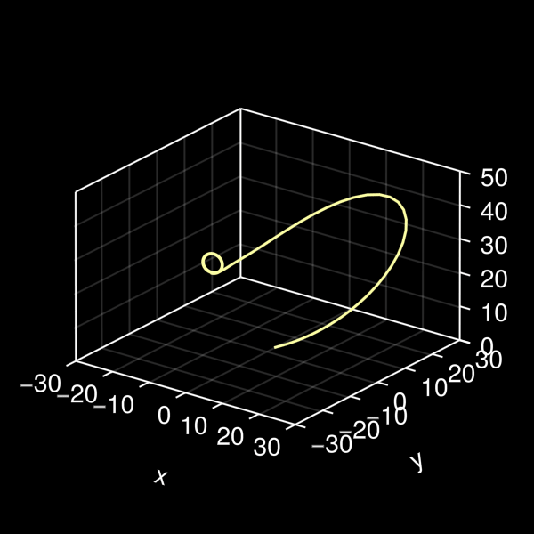
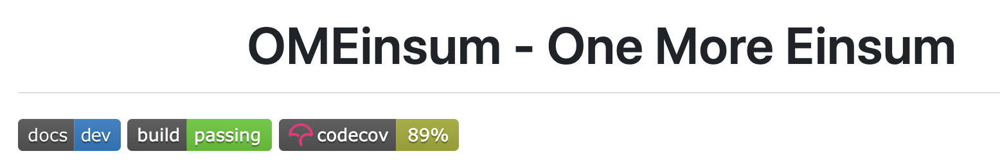

My First Package
One of the most important features of Julia is its package manager. It allows one to create, manage, and publish his own packages. In this section, we will learn how to create a package and publish it to the Julia registry.
Julia package manager can install the correct version of a package and its dependencies because it knows the exact versions of all the packages that are compatible with each other. This information was stored in the General registry - a central GitHub repository of metadata about all registered Julia packages.
Everyone can register a package in the General registry. To do so, you need to:
- Create a package.
- Specify the dependency of your package in the
Project.tomlfile, like which version of a package your package depends on. - Develop the package by writing the source code, tests, and documentation.
- Open-source the package by pushing the package to a public repository on GitHub. GitHub Actions can be used to automate the process of testing, building the documentation, and tagging a release so that other developers can contribute to the package easily.
- Register the package in the
Generalregistry by creating a pull request to theGeneralregistry.
Create a package
We use PkgTemplate. Open a Julia REPL and type the following commands to initialize a new package named MyFirstPackage:
julia> using PkgTemplates
julia> tpl = Template(;
user="GiggleLiu", # replace!
authors="GiggleLiu", # replace!
julia=v"1.10",
plugins=[
License(; name="MIT"),
Git(; ssh=true),
GitHubActions(; x86=true),
Codecov(),
Documenter{GitHubActions}(),
],
)
julia> tpl("MyFirstPackage")where the username "GiggleLiu" should be replaced with your GitHub username. Many plugins are used in the above example:
License: to choose a license for the package. Here we use the MIT license, which is a permissive free software license. Popular licenses include:- MIT: a permissive free software license, featured with a short and simple permissive license with conditions only requiring preservation of copyright and license notices.
- Apache2: a permissive free software license, featured with a contributor license agreement and a patent grant.
- GPL: a copyleft free software license, featured with a strong copyleft license that requires derived works to be available under the same license.
Git: to initialize a Git repository for the package. Here we use the SSH protocol for Git for convenience. Using two-factor authentication (2FA) can make your GitHub account more secure.GitHubActions: to enable continuous integration (CI) with GitHub Actions.Codecov: to enable code coverage tracking with Codecov. It is a tool that helps you to measure the test coverage of your code. A package with high test coverage is more reliable.Documenter: to enable documentation building and deployment with Documenter.jl and GitHub pages.
After running the above commands, a new directory named MyFirstPackage will be created in the folder ~/.julia/dev/ - the default location for Julia packages.
For a package that is intended to be registered in the General registry, it is recommended to use a name that follows the Julia package naming guidelines. Although the same registry may not have two packages with the same name, a package use the UUID rather than the name as its unique identifier, because name may not be unique when multiple registries are used together.
The file structure of the package is as follows:
tree .
.
├── .git
│ ...
├── .github
│ ├── dependabot.yml
│ └── workflows
│ ├── CI.yml
│ ├── CompatHelper.yml
│ └── TagBot.yml
├── .gitignore
├── LICENSE
├── Manifest.toml
├── Project.toml
├── README.md
├── docs
│ ├── Manifest.toml
│ ├── Project.toml
│ ├── make.jl
│ └── src
│ └── index.md
├── src
│ └── MyFirstPackage.jl
└── test
└── runtests.jl.gitand.gitignore: the files that are used by Git. The.gitingorefile contains the files that should be ignored by Git. By default, the.gitignorefile contains the following lines:*.jl.*.cov *.jl.cov *.jl.mem /Manifest.toml /docs/Manifest.toml /docs/build/.github: the folder that contains the GitHub Actions configuration files.LICENSE: the file that contains the license of the package. The MIT license is used in this package.README.md: the manual that shows up in the GitHub repository of the package, which contains the description of the package.Project.toml: the file that contains the metadata of the package, including the name, UUID, version, dependencies and compatibility of the package.Manifest.toml: the file that contains the exact versions of all the packages that are compatible with each other. It is usually automatically resolved from theProject.tomlfile, and it is not recommended pushing it to the remote repository.docs: the folder that contains the documentation of the package. It has its ownProject.tomlandManifest.tomlfiles, which are used to manage the documentation environment. Themake.jlfile is used to build the documentation and thesrcfolder contains the source code of the documentation.src: the folder that contains the source code of the package.test: the folder that contains the test code of the package, which contains the main test fileruntests.jl.
Specify the dependency
The file that contains the metadata of the package, including the name, UUID, version, dependencies and compatibility of the package. To add a new dependency, you can use the following command in the package path:
$ cd ~/.julia/dev/MyFirstPackage
$ julia --projectThis will open a Julia REPL in the package environment. To check the package environment, you can type the following commands in the package mode (press ]) of the REPL:
(MyFirstPackage) pkg> st
Project MyFirstPackage v1.0.0-DEV
Status `~/.julia/dev/MyFirstPackage/Project.toml` (empty project)After that, you can add a new dependency by typing:
(MyFirstPackage) pkg> add LinearAlgebra
(MyFirstPackage) pkg> st
Project MyFirstPackage v1.0.0-DEV
Status `~/jcode/ScientificComputingForPhysicists/lib/MyFirstPackage/Project.toml`
[37e2e46d] LinearAlgebraThe dependency is added correctly if no error is thrown. Press backspace to exit the package mode.
Type ; to enter the shell mode and then type
shell> cat Project.toml
name = "MyFirstPackage"
uuid = "594718ca-da39-4ff3-a299-6d8961b2aa49"
authors = ["GiggleLiu"]
version = "1.0.0-DEV"
[deps]
LinearAlgebra = "37e2e46d-f89d-539d-b4ee-838fcccc9c8e"
[compat]
julia = "1.10"
[extras]
Test = "8dfed614-e22c-5e08-85e1-65c5234f0b40"
[targets]
test = ["Test"]You will see that the dependency LinearAlgebra is added to the [deps] section of the Project.toml file.
We also need to specify which version of LinearAlgebra is compatible with the current package. To do so, you need to edit the [compat] section of the Project.toml file with your favorite editor.
[compat]
julia = "1.10"
LinearAlgebra = "1" # added lineHere, we have used the most widely used dependency version specifier =, which means matching the first nonzero component of the version number. For example:
1matches1.0.0,1.1.0,1.1.1, but not2.0.0.0.8matches0.8.0,0.8.1,0.8.2, but not0.9.0or0.7.0.1.2matches1.2.0,1.3.1, but not1.1.0or2.0.0.
The validity of specifying compatibility is based on the consensus among the developers:
- whenever an exported function is changed in a package, the first nonzero component of the version number should be increased.
- version number starts with
0is considered as a development version, and it is not stable.
Please check the Julia documentation about package compatibility for advanced usage.
Develop the package
Developers develop packages in the package environment. The package development process includes:
1. Edit the source code
The source code of the package is located in the src folder of the package path.
Let us add a simple function to the package. The source code of the package is as follows:
File: src/MyFirstPackage.jl
module MyFirstPackage
# import packages
using LinearAlgebra
# export interfaces
export Lorenz, integrate_step
export Point, Point2D, Point3D
export RungeKutta, Euclidean
# `include` other source files into this module
include("lorenz.jl")
endThe include("lorenz.jl") line includes the source code of the Lorenz system, which can be defined in the lorenz.jl file in the same folder. The source code of is as follows:
File: src/lorenz.jl
"""
Point{D, T}
A point in D-dimensional space, with coordinates of type T.
# Examples
```jldoctest
julia> p1 = Point(1.0, 2.0)
Point{2, Float64}((1.0, 2.0))
julia> p2 = Point(3.0, 4.0)
Point{2, Float64}((3.0, 4.0))
julia> p1 + p2
Point{2, Float64}((4.0, 6.0))
```
"""
# define a point in D-dimensional space
struct Point{D, T <: Real}
data::NTuple{D, T} # a tuple of D elements of type T
end
Point(x::Real...) = Point((x...,)) # `...` is the splat operator
# define 2D and 3D points
const Point2D{T} = Point{2, T}
const Point3D{T} = Point{3, T}
# define the dot product of two coordinate vectors
# `mapreduce` is a high-order function that applies a function to each element
# of an iterable and then reduces the result to a single value.
LinearAlgebra.dot(x::Point, y::Point) = mapreduce(*, +, x.data, y.data)
# implement the operations of the point
# `Base` is the standard library of Julia
# `Base.isapprox` is used to define a new method for the function `isapprox` in the `Base` module
# for arithmetic operations like `*`, `*`, `+`, an extra `:` is required to avoid ambiguity
Base.:*(x::Real, y::Point) = Point(x .* y.data) # `.` is the broadcast operator
Base.:/(y::Point, x::Real) = Point(y.data ./ x)
Base.:+(x::Point, y::Point) = Point(x.data .+ y.data)
Base.isapprox(x::Point, y::Point; kwargs...) = all(isapprox.(x.data, y.data; kwargs...))
# `all` returns true if all elements of the iterable are true
# define the index and broadcastable functions
Base.getindex(p::Point, i::Int) = p.data[i] # for `p[i]` like operations
Base.broadcastable(p::Point) = p.data # for `x .+ y` like operations
Base.iterate(p::Point, args...) = iterate(p.data, args...) # for `[p...]` like operations
# the Lorenz system
struct Lorenz
σ::Float64
ρ::Float64
β::Float64
end
# the differential equation of the Lorenz system
function field(p::Lorenz, u)
x, y, z = u
Point(p.σ*(y-x), x*(p.ρ-z)-y, x*y-p.β*z)
end
# abstract type for integrators, which allows us to switch between different integration methods
abstract type AbstractIntegrator end
# Runge-Kutta 4th order method
# https://en.wikipedia.org/wiki/Runge%E2%80%93Kutta_methods
struct RungeKutta{K} <: AbstractIntegrator end
# Euclidean method
struct Euclidean <: AbstractIntegrator end
function integrate_step(f, ::RungeKutta{4}, t, y, Δt)
k1 = Δt * f(t, y)
k2 = Δt * f(t+Δt/2, y + k1 / 2)
k3 = Δt * f(t+Δt/2, y + k2 / 2)
k4 = Δt * f(t+Δt, y + k3)
return y + k1/6 + k2/3 + k3/3 + k4/6
end
# Euclidean integration
function integrate_step(f, ::Euclidean, t, y, Δt)
return y + Δt * f(t, y)
end
function integrate_step(lz::Lorenz, int::AbstractIntegrator, u, Δt)
return integrate_step((t, u) -> field(lz, u), int, zero(Δt), u, Δt)
endTo use this function, you can type the following commands in the package environment:
julia> using MyFirstPackage
julia> Point(2.0, 3.0)
Point2D{Float64}((2.0, 3.0))- In shell: type
$ cd ~/.julia/dev/MyFirstPackage $ julia --project - In REPL: press
]to enter the package mode and then type
to enter the package environment. To deactivate the package environment, typepkg> activate path/to/packagepkg> activate - In VSCode: Click the
Julia env: ...button in the bottom of the window and then select the package path.
2. Write tests
We always need to write tests for the package. The test code of the package is located in the test folder of the package path.
File: test/runtests.jl
using Test
using MyFirstPackage
@testset "lorenz" begin
include("lorenz.jl")
endFile: test/lorenz.jl
using Test, MyFirstPackage
@testset "Point" begin
p1 = Point(1.0, 2.0)
p2 = Point(3.0, 4.0)
@test p1 + p2 ≈ Point(4.0, 6.0)
end
@testset "step" begin
lz = Lorenz(10.0, 28.0, 8/3)
int = RungeKutta{4}()
r1 = integrate_step(lz, int, Point(1.0, 1.0, 1.0), 0.0001)
eu = Euclidean()
r2 = integrate_step(lz, eu, Point(1.0, 1.0, 1.0), 0.0001)
@test isapprox(r1, r2; rtol=1e-5)
endTo run the tests, you can use the following command in the package environment:
(MyFirstPackage) pkg> test
...
[8e850b90] libblastrampoline_jll v5.8.0+1
Precompiling project...
1 dependency successfully precompiled in 1 seconds. 2 already precompiled.
Testing Running tests...
Test Summary: | Pass Total Time
lorenz | 2 2 0.1s
Test Summary: | Pass Total Time
fluid | 1 1 0.1s
Testing MyFirstPackage tests passedCheers! All tests passed.
You might want to write some examples to visualize the results of the package with Makie. We create an examples folder in the package path and then write the following example code
File: examples/lorenz.jl
using CairoMakie, MyFirstPackage
set_theme!(theme_black())
# create a Lorenz system
lz = Lorenz(10, 28, 8/3)
# initial condition
y = MyFirstPackage.Point(1.0, 1.0, 1.0)
# `Observable` defines the signal that can be used to update plots efficiently
points = Observable(Point3f[])
colors = Observable(Int[])
# create a figure
fig, ax, l = lines(points, color = colors,
colormap = :inferno, transparency = true,
axis = (; type = Axis3, protrusions = (0, 0, 0, 0),
viewmode = :fit, limits = (-30, 30, -30, 30, 0, 50)))
record(fig, "lorenz.mp4", 1:120) do frame
global y
for i in 1:50
# update arrays inplace
y = integrate_step(lz, RungeKutta{4}(), y, 0.01)
push!(points[], Point3f(y...))
push!(colors[], frame)
end
ax.azimuth[] = 1.7pi + 0.3 * sin(2pi * frame / 120) # set the view angle of the axis
notify(points); notify(colors) # tell points and colors that their value has been updated
l.colorrange = (0, frame) # update plot attribute directly
endIt output a video file lorenz.mp4 that visualizes the Lorenz system: 
3. Write documentation
The documentation is built with Documenter.jl. The build script is docs/make.jl. To build the documentation, you can first enter the package environment and then type the following commands in a terminal:
$ cd docs
$ julia --projectInstantiate or update the documentation environment if necessary.
(docs) pkg> dev ..
(docs) pkg> instantiate # or `up`where dev .. is used to add the MyFirstPackage under development to the documentation environment.
Then build the documentation by typing
julia> include("make.jl")where include is a built-in function in Julia that includes the source code of the documentation build file make.jl into the current environment.
The generated HTML files are located in the docs/build folder of the package path. To preview the documentation, just open the index.html file in a web browser.
For seamless previewing of documentation on updates, it is highly recommended using the LiveServer.jl package.
Open-source the package
To open-source the package, you need to push the package to a public repository on GitHub.
First create a GitHub repository with the same name as the package. In this example, the repository name should be
MyFirstPackage.jl. To check the remote repository of the package, you can use the following command in the package path:$ git remote -v origin git@github.com:GiggleLiu/MyFirstPackage.jl.git (fetch) origin git@github.com:GiggleLiu/MyFirstPackage.jl.git (push)Then push the package to the remote repository:
$ git add -A $ git commit -m "Initial commit" $ git pushAfter that, you need to check if all your GitHub Actions are passing. You can check the status of the GitHub Actions from the badge in the
README.mdfile of the package repository. The configuration of GitHub Actions is located in the.github/workflowsfolder of the package path. Its file structure is as follows:.github ├── dependabot.yml └── workflows ├── CI.yml ├── CompatHelper.yml └── TagBot.yml- The
CI.ymlfile contains the configuration for the CI of the package, which is used to automate the process of- Testing the package after a pull request is opened, or the main branch is updated. This process can be automated with the julia-runtest action.
- Building the documentation after the main branch is updated. Please check the Documenter documentation for more information.
- The
TagBot.ymlfile contains the configuration for the TagBot, which is used to automate the process of tagging a release after a pull request is merged. - The
CompatHelper.ymlfile contains the configuration for the CompatHelper, which is used to automate the process of updating the[compat]section of theProject.tomlfile after a pull request is merged.
Configuring GitHub Actions is a bit complicated. For beginners, it is a good practise to mimic the configuration of another package, e.g. OMEinsum.jl.
- The
Register the package
Once your package is ready to be published, you need to register the package in the General registry. The General registry is a central GitHub repository of metadata about all registered Julia packages. To register the package, you need to create a pull request to the General registry and wait for the pull request to be reviewed and merged. This process can be automated by the Julia registrator. If the pull request meets all guidelines, your pull request will be merged after a few days. Then, your package is available to the public.
A good practice is to tag a release after the pull request is merged so that your package version update can be reflected in your GitHub repository. This process can be automated by the TagBot.
Case study: The file structure of OMEinsum.jl

OMEinsum.jl is a package for tensor contraction. The badges in the README.md file of the package repository are the following:
build/passing: the tests executed by GitHub Actions are passing.codecov/89%: the code coverage is 89%, meaning that 89% of the code is covered by tests.docs/dev: the documentation is built and deployed with GitHub pages.
Now, let's take a look at the file structure of the package by running the following command in the package path (~/.julia/dev/OMEinsum):
$ tree . -L 1 -a
.
├── .git
├── .github
├── .gitignore
├── LICENSE
├── Project.toml
├── README.md
├── benchmark
├── docs
├── examples
├── ext
├── ome-logo.png
├── src
└── testFile: Project.toml
name = "OMEinsum"
uuid = "ebe7aa44-baf0-506c-a96f-8464559b3922"
authors = ["Andreas Peter <andreas.peter.ch@gmail.com>"]
version = "0.8.1"
[deps]
AbstractTrees = "1520ce14-60c1-5f80-bbc7-55ef81b5835c"
BatchedRoutines = "a9ab73d0-e05c-5df1-8fde-d6a4645b8d8e"
ChainRulesCore = "d360d2e6-b24c-11e9-a2a3-2a2ae2dbcce4"
Combinatorics = "861a8166-3701-5b0c-9a16-15d98fcdc6aa"
LinearAlgebra = "37e2e46d-f89d-539d-b4ee-838fcccc9c8e"
MacroTools = "1914dd2f-81c6-5fcd-8719-6d5c9610ff09"
OMEinsumContractionOrders = "6f22d1fd-8eed-4bb7-9776-e7d684900715"
TupleTools = "9d95972d-f1c8-5527-a6e0-b4b365fa01f6"
[weakdeps]
CUDA = "052768ef-5323-5732-b1bb-66c8b64840ba"
[extensions]
CUDAExt = "CUDA"
[compat]
AbstractTrees = "0.3, 0.4"
BatchedRoutines = "0.2"
CUDA = "4, 5"
ChainRulesCore = "1"
Combinatorics = "1.0"
MacroTools = "0.5"
OMEinsumContractionOrders = "0.8"
TupleTools = "1.2, 1.3"
julia = "1"
[extras]
Documenter = "e30172f5-a6a5-5a46-863b-614d45cd2de4"
DoubleFloats = "497a8b3b-efae-58df-a0af-a86822472b78"
ForwardDiff = "f6369f11-7733-5829-9624-2563aa707210"
LinearAlgebra = "37e2e46d-f89d-539d-b4ee-838fcccc9c8e"
Polynomials = "f27b6e38-b328-58d1-80ce-0feddd5e7a45"
ProgressMeter = "92933f4c-e287-5a05-a399-4b506db050ca"
Random = "9a3f8284-a2c9-5f02-9a11-845980a1fd5c"
SymEngine = "123dc426-2d89-5057-bbad-38513e3affd8"
Test = "8dfed614-e22c-5e08-85e1-65c5234f0b40"
TropicalNumbers = "b3a74e9c-7526-4576-a4eb-79c0d4c32334"
Zygote = "e88e6eb3-aa80-5325-afca-941959d7151f"
[targets]
test = ["Test", "Documenter", "LinearAlgebra", "ProgressMeter", "SymEngine", "Random", "Zygote", "DoubleFloats", "TropicalNumbers", "ForwardDiff", "Polynomials", "CUDA"]It contains the following more sections:
[weakdeps]and[extensions]: the sections that specify the extensions of the package, which is related with the files in theextfolder. A package "extension" is a module that is automatically loaded when a specified set of other packages (its "extension dependencies") are loaded in the current Julia session. As a using case, consider you want to add the CUDA support to your package, but you don't want to force all users to installCUDApackage if they don't need it, then addingCUDAas a weak dependency and move this featureextfolder is a good choice. Please check the Julia documentation about package extensions for more information.[extras]and[targets]: the section that specifies the extra dependencies of the package that used to test the package. One can also specify the extra dependencies for the test environment in thetestfolder of the package path.
Quiz:
- Is
ChainRulesCoreat version 1.2 compatible withOMEinsum? - If
ChainRulesCoreat version 2.0 is released, what should be done to makeOMEinsumcompatible with the new version ofChainRulesCore? Which GitHub Action is used to automate this process? - If an author of
OMEinsumfixed a bug, what should be done to make the new version ofOMEinsumavailable to the public? - If an author of
OMEinsumchanged an exported function, what should be done to make the new version ofOMEinsumavailable to the public?